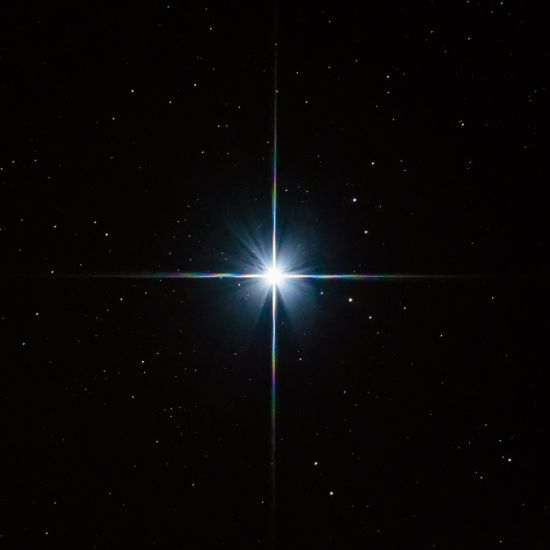
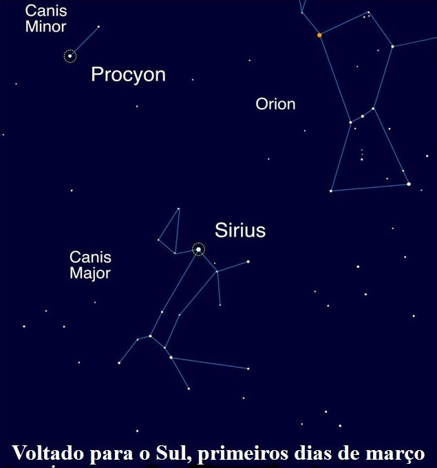

Sirius

Sirius, também conhecida como Sirius A, Sírio, α CMa, α
Canis Majoris ou alpha Canis Majoris (latim: Alfa do Cão Maior)
é a estrela mais brilhante do céu noturno da Terra. O nome significa "
incandescente" em grego, uma descrição apropriada,
já que apenas alguns planetas, a lua cheia e a Estação Espacial
Internacional ofuscam esta estrela.

Sirius é altamente visível no céu noturno de inverno do Hemisfério Norte, No Hemisfério Sul,
a estrela Sirius é visível para todos os locais ao norte do Círculo Antártico durante o verão,
porque a estrela tem uma alta luminosidade, ou brilho intrínseco, em relação a outras estrelas,
e porque está relativamente perto da Terra (8,6 anos-luz de distância). De acordo com a NASA, Sirius
tem uma massa que é duas vezes a do sol da Terra. Se a estrela fosse colocada ao lado
do nosso Sol, Sirius iria ofuscá-la mais de 20 vezes, de acordo com a Imagem do Dia da Astronomia da NASA.
Desenvolvedoras:
MARIA LUIZA GONÇALVES PEREIRA
NICOLY RILLARY BRITO DA SILVA